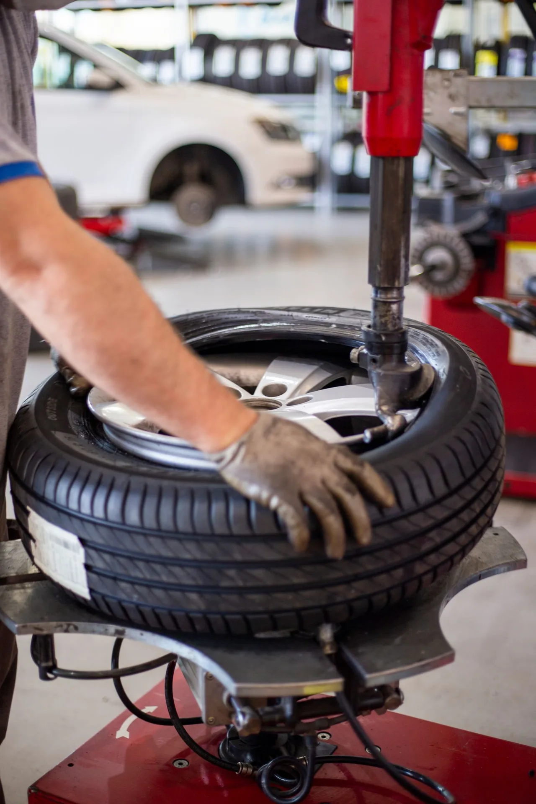
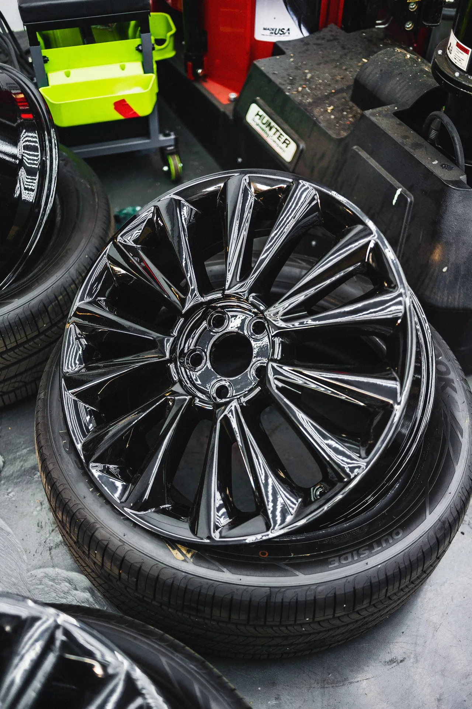
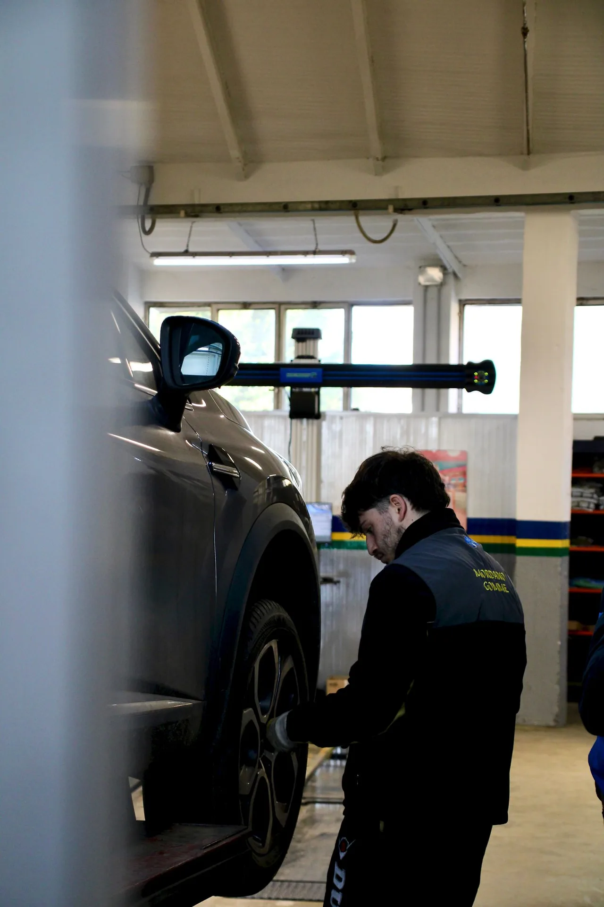

Шиномонтаж · Мурманск
Шиномонтаж «2 Сезона» в Мурманске
Сезонная замена шин, балансировка и ремонт колёс на Северном проезде.
- Предварительная запись
- Балансировка и вулканизация
- Оплата картой

Услуги и цены
Позиции из прайса на Яндекс Картах.
- Переобувка легкового автомобиля, R13–R163 400 ₽
- Переобувка кроссовера, R14–R163 800 ₽
- Переобувка внедорожника, R15–R174 800 ₽
Как обратиться в мастерскую
- 01
Выберите услугу
Укажите, какую работу нужно выполнить.
- 02
Уточните время
В карточке мастерской доступны способы связи.
- 03
Постройте маршрут
Откройте адрес в Яндекс Картах перед поездкой.


Отзывы с Яндекс.Карт
«Результатом, ценой, скоростью доволен»
Отзыв на Яндекс Картах · 26 августа 2026
«сделали правку диска за 2 часа и без записи»
Отзыв на Яндекс Картах · 10 февраля 2026
«Колёса с датчиками и всё отлично работает.»
Отзыв на Яндекс Картах · 19 декабря 2025
Отзывы с карточки на Яндекс.Картах, без правок.
Частые вопросы
Как уточнить стоимость и время?
Сообщите мастерской, какая услуга нужна. Для замены шин укажите тип автомобиля и размер колёс.
Где найти адрес и график?
Актуальные сведения и маршрут доступны в карточке на Яндекс Картах.
Контакты и маршрут
- График
- пн-сб 10:00–20:00; вс 11:00–19:00
- Связь
- ВКонтакте · в карточке мастерской